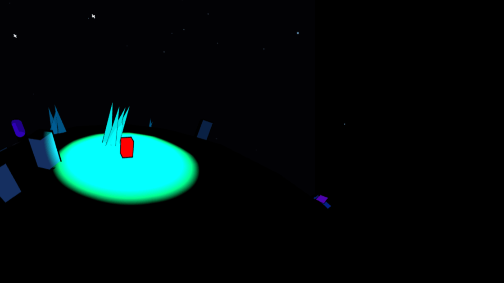
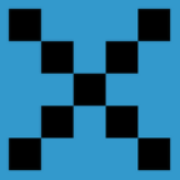
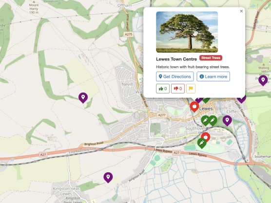

Active developmentHoly Week
An investigative story world told across desktop, mobile and a tactile globe—connecting character testimony, place and player deduction.
Enter the story
Independent creative technology studio
Pixelagent combines game design, software, education and visual storytelling to make playful digital experiences with purpose.
One connected practice
I’m Pixelagent—a designer, developer and educator building at the point where games, tools and stories overlap.
From browser-native creation studios to narrative worlds and community apps, every project begins with a simple question: what could this let people do, feel or discover?
The story behind PixelagentSelected work
Flagship projects that bring together story, code, visual design and experimentation.

Active developmentAn investigative story world told across desktop, mobile and a tactile globe—connecting character testimony, place and player deduction.
Enter the storyA growing family of capable, accessible tools for making game art, sound, scenes and interactive worlds.
Explore the toolkit
Community appA community-powered map that makes surplus local produce visible, shareable and responsibly accessible.
Read the case studyMake, test, learn
Ideas become meaningful through play. My process moves quickly from story and intent to something tangible—then lets real use reveal what comes next.
Have an idea?
Games, creative tools, educational experiences and useful apps—I’m always interested in an intriguing problem.
Start a conversation